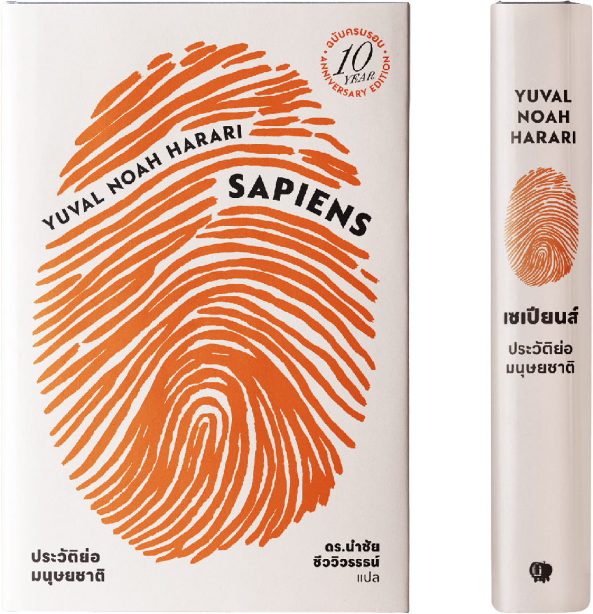
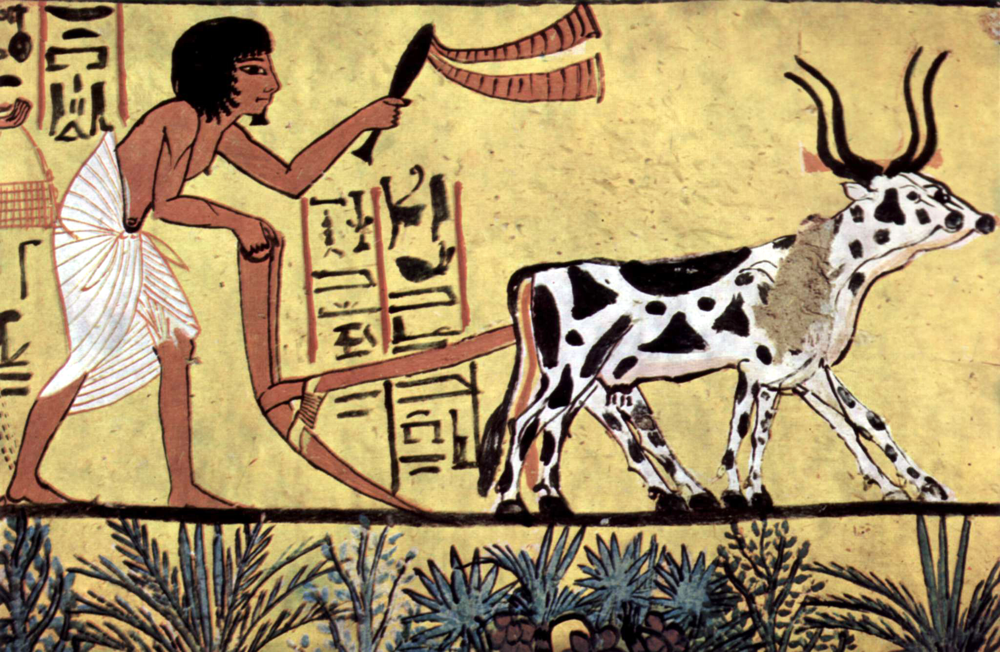

หนังสือ Sapiens พานักอ่านย้อนเวลาไปกว่า 70,000 ปี เพื่อสำรวจว่า Homo sapiens ซึ่งเคยเป็นเพียงสัตว์เลี้ยงลูกด้วยนมสายพันธุ์หนึ่งที่ไร้ความสำคัญบนโลก สามารถก้าวขึ้นมาเป็น "พระเจ้า" ผู้ครอบครองและควบคุมโลกใบนี้ได้อย่างไร ผ่าน 3 การปฏิวัติครั้งใหญ่ ที่เปลี่ยนโฉมหน้าประวัติศาสตร์มนุษยชาติ:
การปฏิวัติทางรับรู้และเข้าใจ
(The Cognitive Revolution)
จุดเริ่มต้นเมื่อประมาณ 70,000 ปีก่อน Sapiens พัฒนาภาษาพิเศษที่สามารถพูดคุยถึง "สิ่งที่ไม่มีตัวตนจริง" (จินตนาการร่วม) ทำให้มนุษย์นับพันนับหมื่นคนสามารถร่วมมือกันได้ โดยไม่จำต้องรู้จักกันส่วนตัว

การปฏิวัติเกษตรกรรม
(The Agricultural Revolution)
เกิดขึ้นเมื่อประมาณ 10,000 ปีก่อน เปลี่ยนมนุษย์จากการล่าสัตว์และเก็บของป่า มาเป็นเกษตรกร Harari มองว่าการปฏิวัตินี้ ไม่ได้ทำให้คุณภาพชีวิตรายบุคคลดีขึ้น แต่กลับสร้าง "กับดัก" ที่ผูกมัดมนุษย์ไว้กับที่ดิน และการทำงานหนัก
การปฏิวัติวิทยาศาสตร์
(The Scientific Revolution)
เริ่มต้นเมื่อราว 500 ปีก่อน เมื่อมนุษย์ยอมรับว่า "ตนเองไม่รู้อะไรเลย" (Ignoramus) นำไปสู่การค้นคว้า การผนึกกำลังกับจักรวรรดินิยมและทุนนิยม จนเกิดเทคโนโลยีที่เปลี่ยนโลกอย่างรวดเร็ว
คนที่อยากรู้ว่ามนุษย์ตัวเล็กๆ กลายมาเป็นผู้ครองโลกได้อย่างไร ผ่านการปฏิวัติทางความคิด
ผู้ที่เบื่อประวัติศาสตร์แบบท่องจำวันที่หรือสงคราม แต่ชอบประวัติศาสตร์เชิงวิเคราะห์ วัฒนธรรม ศาสนา และระบบทุนนิยม
ใครที่ชอบขบคิดเรื่องความสุข ความหมายของชีวิต และความเชื่อร่วมกันของมนุษย์ เช่น เงิน ชาติ หรือศาสนา
หนังสือเล่มนี้เล่าเรื่องยากให้สนุกได้ แม้ไม่ใช่ผู้เชี่ยวชาญก็อ่านเข้าใจง่าย เพราะผู้เขียนมีวิธีเล่าเรื่องที่น่าติดตาม
“ย้อนมองอดีต เพื่อเข้าใจปัจจุบันและมองเห็นอนาคต ของเผ่าพันธุ์มนุษย์”
Must-Read Classic